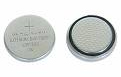

OUR HIGHLY TRAINED TECHNICIANS REPAIR AND SERVICE MOST WATCH BRANDS, INCLUDING VINTAGE WATCHES
PROVIDING EXPERT CASIO WATCH REPAIR SERVICE SINCE 1998
**ALL REPAIR WORK IS BACKED BY A 1 YEAR WARRANTY ON PARTS AND LABOR.**
Services
TROUBLESHOOTING - $17 (CREDITED TOWARDS REPAIR)
Watch not working or inaccurate? Our Technician performs diagnostics procedures that indicate what repairs are necessary. The troubleshooting fee will be credited toward the repair cost. It is not refundable if the watch is non-repairable or if you do not want the watch repaired.
BATTERY REPLACEMENT (NON-SOLAR) - $20

If your watch has more than one battery, there will be an additional charge of $6 for each additional battery.
SOLAR BATTERY REPLACEMENT (CASIO) - $30
Solar battery repairs for Citizen and Seiko watches vary, depending on the model. Fill out the form for a specific estimate.
WATER PRESSURE TESTING - $26
If you get your watch wet from showering, swimming or diving, and do not want it to leak after battery replacement, we strongly recommended a new gasket and water pressure test for all 50 meter and above water-resistant watches.
INTERIOR CLEANING AND ADJUSTMENT - $10
*Return delivery is $6.25 and $15 to other countries
Frequently Asked Questions
HOW DOES IT WORK?
Call or email us. Complete the
repair form and then mail your watch to us. We will contact you in order to obtain credit card payment. Money orders and cashiers checks are also acceptable. Turn around time is about 5 to 7 business days.
IS THERE A WARRANTY?
Yes, there is a 1 year warranty on parts and labor.
WHAT IS TECHNO5TRADING?
Techno5Trading is a Los Angeles based and family-owned wholesale watch business. We've been selling and fixing watches for the last 30+ years.
DO YOU HAVE AN ONLINE WATCH STORE?
Yes! We sell watches and watch bands from brands like Casio (G-Shock, Baby-G), Seiko, Diesel, Guess, Michael Kors, Nixon, Anne Klein at our
Ebay store.
If you're interested in buying wholesale, reach out to us to receive our price list.
Techno 5 Trading
640 S. Hill St #260 Los Angeles, CA 90014 US
Our Ebay store
Not part of nor affiliated with Casio Inc., Citizen, Seiko, or any other watch brand.